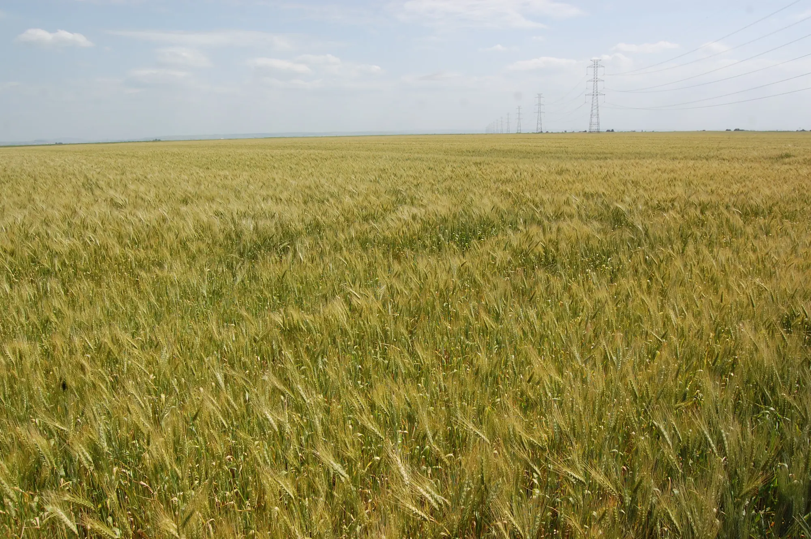

Études sectorielles
Les fédérations et associations adhérentes bénéficient d’une prise en charge intégrale de leurs études spécialisées.
Deux types d’études
- Études d’analyse stratégique sectorielle
- Études d’ingénierie de formation sectorielle
Conditions d’éligibilité
- Adhésion au GIACAGRO obligatoire.
- Étude devant répondre aux besoins du secteur concerné.
- L'étude n'a pas bénéficié d'un financement de la part d'un autre organisme national ou international.
Quatre échéances de paiement
- 20 %À l'initialisation
- 30 %À mi-parcours
- 30 %À la réception provisoire
- 20 %À la réception définitive
De la demande à la restitution
Dépôt de la demande
- Les organisations professionnelles déposent leur demande de financement selon le canevas DFS auprès du GIACAGRO au cours de l'année N-1.
Instruction et approbation
- Intégration des demandes dans le plan d'action annuel du GIACAGRO.
- Soumission du plan d'action au CCCSF pour approbation.
- Approbation des financements et attribution du budget prévisionnel au GIAC.
- Conclusion d'une convention de financement entre le GIAC et l'OFPPT.
Consultation
- Lancement d'appels à consultation sur la base de TDR co-élaborés.
- Au moins 5 offres pour la validité de la consultation.
- Évaluation conjointe des offres par une commission mixte GIAC et organisation professionnelle.
- Élaboration d'un état synthétique des résultats soumis au CCCSF.
Sélection et contractualisation
- Sélection finale du cabinet par le CCCSF.
- Conclusion d'un contrat tripartite entre le GIAC, l'organisation professionnelle et le cabinet retenu.
Pilotage et validation
- Suivi de l'étude par un comité de pilotage élargi.
- Validation progressive des livrables.
- Établissement de procès-verbaux de validation.
Restitution des résultats
- Présentation finale des résultats au CCCSF par l'ODB et le GIAC.
